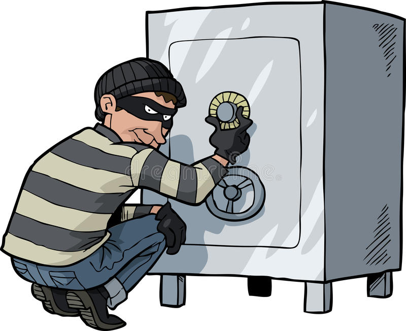

Safe Cracker

Goal:
Method calls - call a method passing a parameter. Your mission: use the tryCode method to crack the safe by trying all possible numbers.
Steps:
- Create a for loop that will repeat until the program ends.
- Inside the loop, call the tryCode method using the for loop variable for the code.
- The tryCode method will end the program when the correct code is guessed.
- Run the program and see all the guesses being printed to the console.
- Bonus: Can you change the loop so that the safe will be cracked more quickly?